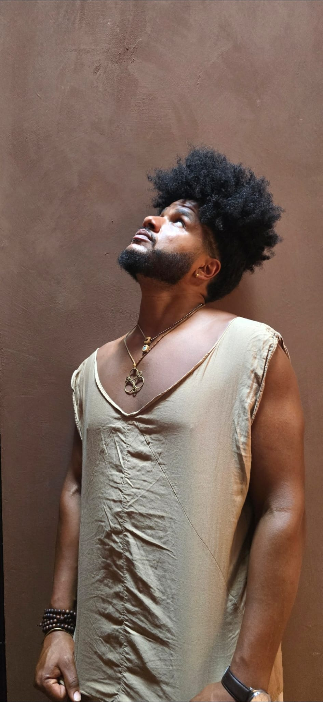
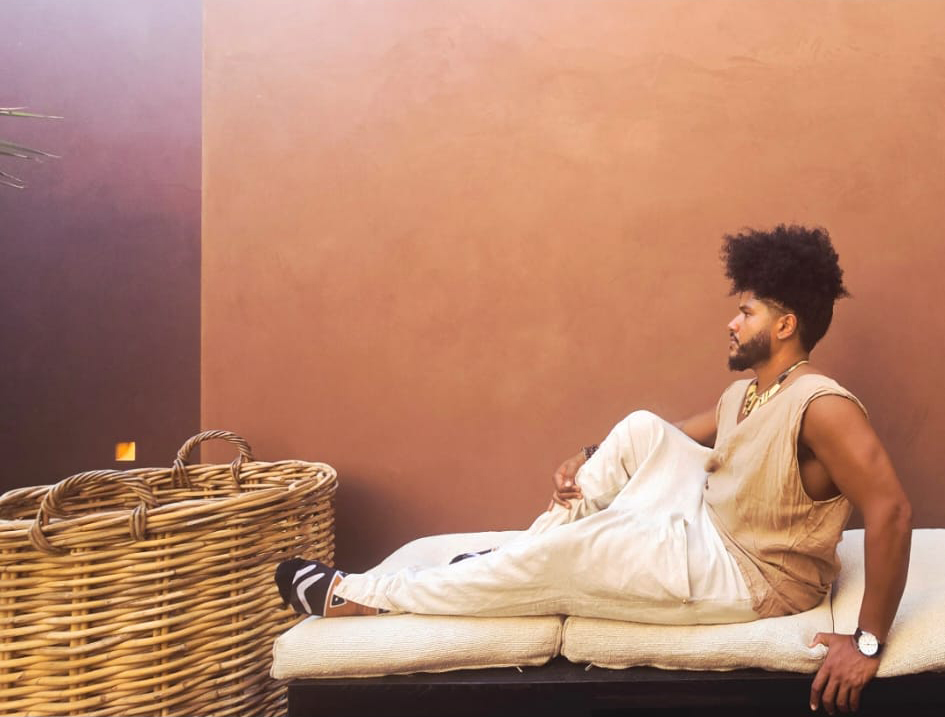

Spiritual sounds rooted in sacred earth
Born in the Dominican Republic and raised in New York City, Benjamin Urbaez channels ancestral rhythms through live afrobeats, spoken word, and spiritual soundscapes.
His music weaves Taino and indigenous influences with urban poetry, creating ceremonies that transcend language—performing in both Spanish and English, rapping, singing, and speaking truth.
Discover More
Music is medicine. Every sound carries intention, every rhythm holds memory. We don't just make music—we invoke the ancestors.
— Benjamin Urbaez
For the past year, Benjamin has toured the world alongside Dreeemy, blending his Dominican roots with her Egyptian flair. Together they create live improvisational experiences—a fusion of cultures, languages, and spiritual traditions.
Explore Music